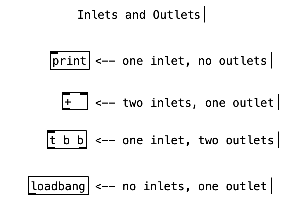
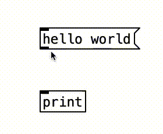
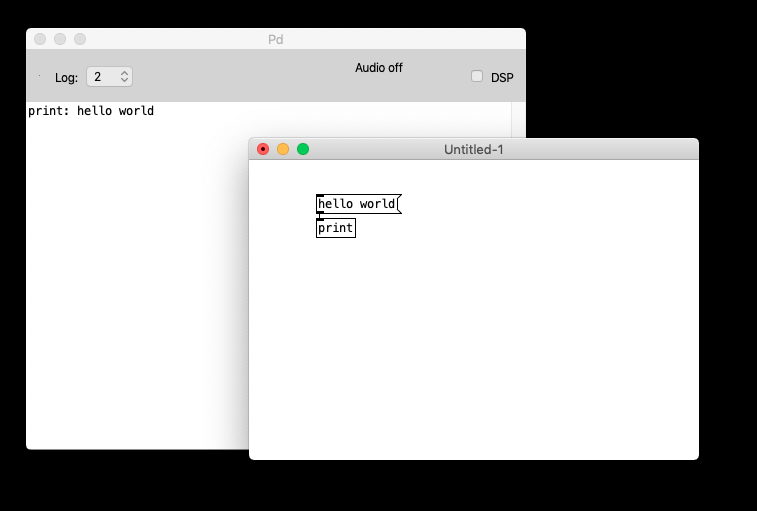
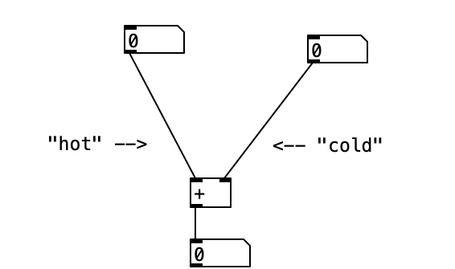
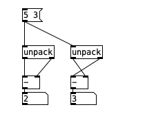

A Pd object is displayed on screen as a box that can generally be connected to other boxes.

These connections can be made by hovering with the mouse pointer over the outlet (thicker line at the bottom of an object), to the inlet (thicker line at the top of an object) of another object.

The left-most inlet is known as the hot inlet because whenever it receives a message this causes the object to emit some output to its outlets.
In the case of the print object, which has one outlet,
the message is immediately sent to (and therefore printed on) the Pd
console.

However, certain objects have multiple inlets. In these cases, the first inlet keeps the same function as above, and the rest will generaly not cause the object to output anything. Instead they usually update internal variables of the object. This is why the rest of the inlets are called cold inlets.
A group of objects that show this behavior is the binary
operators for math operations like: +, -, *, /

Precisely, the number output is the result of adding the left-most number to the most recent right-most number, ie. the number stored in the cold inlet.
One thing that is important to know is the order in which Pd objects
process their outputs. Again, objects with one output are not an issue
because the message is sent to the object's only output like the
+ object. There are objects with multiple outlets.
The way Pd outputs its messages to multiple outputs is from right to left.

unpackThe unpack object takes a list of
messages as input and distributes them in order to every outlet, so that
the first element of the list correspond to the first outlet, the second
of the list to the second outlet, etc. The output occurs as always
from right to left.
This is why, in the image above the first - object
computes the substraction 5 - 3 correctly, ie
2, while the second group does not. The output of the
second group is 3, which is the result of adding
3 to 0 which is the initial value of the
- object, triggered first because it is connected to the
right-most outlet of the unpack. After outputting the
result, the value 5 is sent to the cold
inlet of the - object.
As you can tell, it is very important to keep in mind the order of execution when working with Pd objects.